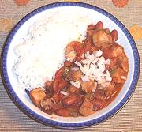

|
Turkey Chili - QuickUSA | ||||
| Serves: Effort: Sched: DoAhead: |
4 main ** 50 min Yes |
A quick chili requiring no advance preparation, but tasty and satisfying all the same - an excellent use for leftover turkey. Goes well with plenty of Jasmine rice and red wine. | |||
|
10 4 6 1 2 1-1/2 ------ 14 14 1/3 1/3 2 1/2 tt 1/8 ------ |
oz oz oz cl T T --- oz oz c c t t t --- |
Turkey, cooked Bell Pepper Onion Garlic Parsley, flat Olive Oil -- Bean mix can Kidney Beans can Diced Tomatoes Red Wine Stock (1) Chili Powder (2) Chili Flakes (3) Salt Pepper ---- Garnish Cilantro Leaves Grated Jack Cheese Chopped Onion (any or all) |
Prep - (15 min)
|